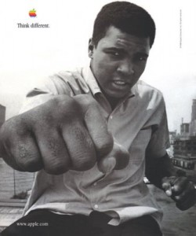
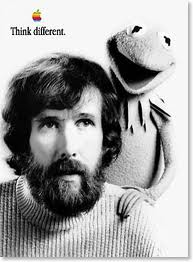
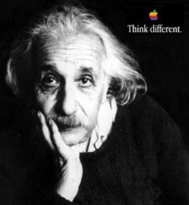
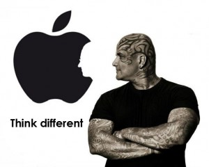

Chương 24

ee Clow, giám đốc sáng tạo ở Chiat/Day người đã thực hiện quảng cáo “1984” tuyệt vời để giới thiệu Macintosh, lái xe tới Los Angeles vào những ngày đầu tháng 7 khi chuông điện thoại trong xe của ông reo. “Chào Lee, Steve đây,” ông nói.” Đoán xem nào? Amelio vừa từ chức. Anh có thể tới đây không?”
Apple khi đó đang tiến hành xem xét để lựa chọn một đối tác mới, và Jobs không cảm thấy ấn tượng với những gì mình thấy. Vì vậy ông muốn Clow và công ty của ông, và đã gọi TBWA\Chiat\Day tới để chạy đua giành hợp đồng này. “Chúng tôi cần chứng tỏ Apple vẫn tồn tại,” Jobs nói, “và nó vẫn đang chứa đựng những điều đặc biệt.” Clow nói rằng mình không tham gia tranh giành hợp đồng quảng cáo. “Anh biết công việc của chúng tôi,” ông nói. Những Jobs đã cố gắng nài nỉ. Rất khó để từ chối tất cả những công ty đã tham gia đấu thầu, bao gồm BBDO và Arnold Worldwide, để mời lại “ông bạn già,” Jobs nói.
Clow đã đồng ý bay tới Cupertino với vài thứ có thể trình diễn. Nhắc lại việc này sau nhiều năm, Jobs bắt đầu khóc.
Tôi nghẹn lại, nó thực sự làm tôi nghẹn lời. Thật rõ ràng là Lee quá yêu Apple. Họ là những người giỏi nhất trong lĩnh vực quảng cáo. Và ông ấy đã không phải đấu thầu trong 10 năm. Nhưng cuối cùng ông đã làm điều đó, bằng cả trái tim của mình, bởi tình yêu của ông đối với Apple cũng lớn như tình yêu của chúng tôi vậy. ông ấy và nhóm của mình đem tới một ý tưởng sáng chói, “Tư duy khác biệt.” Và nó tốt hơn mười lần so với những gì các đại lý khác thể hiện. Nó làm tôi nghẹn ngào, và nó vẫn làm tôi khóc mỗi khi nhớ lại điều đó, cả sự quan tâm của Lee và sự chói sáng trong ý tưởng “Tư duy khác biệt” của ông ấy. Thỉnh thoảng tôi lại tìm thấy mình trong hiện diện của sự thuần khiết - sự thuần khiết của tâm hồn và tình yêu - và tôi luôn luôn khóc. Nó luôn chạm tới và nắm lấy tôi. Đó là một thời khắc như vậy. Có một sự thuần khiến trong đó khiến tôi không bao giờ quên. Tôi đã khóc trong văn phòng của mình khi ông ấy trình bày ý tưởng đó, và tôi vẫn khóc khi nghĩ về nó.
Jobs và Clow đều đồng ý về việc Apple là một trong những thương hiệu tuyệt vời nhất trên thế giới, và chắc chắn là 1 trong 5 thương hiệu hàng đầu dựa trên sự kết hợp của cảm xúc, nhưng họ cần nói với công chúng về sự đặc biệt của nó. Vì vậy họ muốn có một chiến dịch về hình ảnh thương hiệu, chứ không chỉ là một bộ các sản phẩm quảng cáo. Nó được thiết kế không phải để tôn vinh những gì máy tính có thể làm. “Đó không phải vấn đề tốc độ xử lý hay bộ nhớ,” Jobs nhớ lại.
“Nó nói về sự sáng tạo.” Nó không chỉ hướng trực tiếp vào những khách hàng tiềm năng, mà còn hướng tới chính những nhân viên của Apple: “ở Apple chúng tôi đã quên mất mình là ai. Có một cách để nhớ bạn là ai, đó là nhớ ai là người hùng của bạn. Đây là cốt lõi của chiến dịch này.” Clow và nhóm của mình đã thử nhiều cách tiếp cận để tán dương những “người điên” những người có “tư duy khác biệt.” Họ đã làm một đoạn phim trên nền bài hát CrazycCia Seal (“Chúng ta sẽ không bao giờ sống sót trừ khi ta có một chút điên loạn”), nhưng không thấy hợp lý.
Sau đó họ thử nhiều phiên bản khác sử dụng bản ghi âm bài đọc The Road Not Taken của Robert Frost hay bài phát biểu Dead Poets Society của Robin Williams. Cuối cùng họ quyết định phải viết lời thoại riêng của mình; bản nháp bắt đầu với, “Gửi những người điên.” Jobs vẫn đòi hỏi khắt khe như mọi khi. Khi nhóm của Clow bay tới với một phiên bản trên giấy, ông đã nổi giận với cây viết trẻ. “Đây là thứ vứt đi!” ông hét lên. “Công ty quảng cáo này dở tệ và tôi ghét nó.” Đó là lần đầu tiên tay viết trẻ này gặp Jobs, anh ta đứng câm lặng và sau đó không bao giờ quay lại. Tuy vậy những người có thể trụ được với Jobs, gồm Clow cùng những người trong nhóm của ông là Ken Segall và Craig Tanimoto, đã có thể làm việc cùng ông để viết ra một bài thơ mà Jobs thích. Trong phiên bản gốc dài 60 giây nó viết:
Gửi những người điên.
Những người không thể thích nghi.
Những người nổi loạn.
Những người gây rối.
Những chiếc cọc tròn trong các hố vuông.
Những người nhìn sự việc một cách khác biệt.
Họ không ưa thích các luật lệ.
Và họ không xem trọng hiện tại.
Bạn có thể đánh giá,
Bạn có thể không đồng ý với họ,
Ca ngợi hay phỉ báng họ.
Điều duy nhất bạn không thể làm là bỏ qua họ.
Bởi họ thay đổi mọi thứ.
Họ đẩy loài người tiến lên.
Có thể một số người nhìn họ như những kẻ điên,
Chúng tôi nhìn họ như những thiên tài.
Bởi những người đủ điên để nghĩ họ có thể thay đổi thế giới là những người có thể làm điều đó.
Jobs, người có thể nhận biết từng quan điểm trong này, tự viết một số dòng, gồm câu “Họ đẩy loài người tiến lên.” Vào thời điển diễn ra Macworld Boston đầu tháng 8, họ đã thực hiện một phiên bản thô. Họ đồng tình rằng nó chưa sẵn sàng, nhưng Jobs đã sử dụng những ý tưởng này và câu “Tư duy khác biệt” trong bài nói của mình. “Đó là phôi thai của một ý tưởng tuyệt vời,” ông nói khi đó. “Apple hướng tới những người có tư duy vượt khỏi khuôn khổ, những người muốn sử dụng máy tính để giúp họ thay đổi thế giới.”
Họ đã tranh luận về vấn đề ngữ pháp: Nếu “khác biệt” hướng tới động từ “tư duy,” nó cần phải là một phó từ, “tư duy một cách khác biệt.” Nhưng Jobs nhấn mạnh việc ông muốn “khác biệt” được sử dụng thành một danh từ, như là “tư duy chiến thắng” hay “tư duy đẹp.” Hơn nữa, nó nghe giống cách sử dụng thông thường hơn, như “Nghĩ lớn.”, Jobs sau đó giải thích, “Chúng tôi đã tranh luận xem nó đã chính xác để bắt đầu quảng cáo chưa. Đó không phải là tư duy đơn điệu, đó là tư duy khác biệt. Tư duy khác một chút, tư duy khác rất nhiều, tư duy khác biệt. Tư duy một cách khác biệt‟ không mang lại ý nghĩa với tôi.”
Để gợi lên tinh thần của Dead Poets Society, Clow và Jobs muốn Robin Williams đọc bài viết này. Đại diện của ông nói Williams không tham gia quảng cáo, vì thế Jobs thử gọi trực tiếp cho ông ấy. ông không vượt qua được vợ của Williams, người không để ông nói chuyện trực tiếp với nam nghệ sĩ bởi bà biết Jobs có sức thuyết phục tới mức nào. Họ cũng cân nhắc Maya Angelou và Tom Hanks, ở bữa tối gây quỹ của Bill Cliton mùa thu năm đó, Jobs kéo tổng thống ra một bên và nhờ ông gọi điện cho Hanks để nói về việc đó, nhưng tổng thống đã từ chối yêu cầu đó. Cuối cùng họ chọn Richard Dreyfuss, một người hâm mộ trung thành của Apple.
Ngoài quảng cáo thương mại trên truyền hình, họ đã thực hiện một trong những chiến dịch quảng cáo in đáng

nhớ nhất trong lịch sử. Mỗi tờ quảng cáo là một bức chân dung đen trắng của một nhân vật lịch sử với biểu tượng của Apple và dòng chữ “Tư duy khác biệt” ở góc. Điều làm nó trở nên đặc biệt thu hút là những khuôn mặt không được chú thích tên. Một số - Einstein, Gandhi, Lennon, Dylan, Picasso, Edison, Chaplin, King - rất dễ để nhận diện. Nhưng những người khác khiến mọi người phải dừng lại, suy đoán, và có thể hỏi bạn bè để biết tên của người trong ảnh: Martha Graham, Ansel Adams, Richard Feynman, Maria Callas, Frank Lloyd Wright, James Watson, Amelia Earhart.Phần lớn đều là những thần tượng của cá nhân Jobs. Họ có khuynh hướng là những người sáng tạo và chấp nhận rủi ro, thách thức thất bại và đặt cược cả sự nghiệp của mình để làm việc theo những cách khác biệt. Một người ái mộ nhiếp ảnh đã tham gia để đảm bảo họ có những bức chân dung hoàn hảo của các vĩ nhân. “Đây không phải là bức ảnh hợp lý của Gandhi,” anh ta nói với Clow. Clow giải thích bức ảnh nổi tiếng do Margaret Bourke-White chụp Gandhi ở bên guồng quay tơ thuộc sở hữu của Time-Life Pictures và không được sử dụng với mục đích thương mại. Vì thế Jobs đã gọi cho Norman Pearlstine, tổng biên tập tủa tạp chí Time, quấy rầy ông ta để xin một ngoại
lệ.
Ông cũng gọi cho Eunice Shriver để thuyết phục gia đình bà cung cấp bức ảnh ông yêu thích, chụp người em trai Bobby Kennedy của bà trong chuyến thăm Appalachia, Jobs cũng đã liên hệ với các con của Jim Henson để có bức ảnh đẹp nhất của người điều khiển rối đã qua đời.
Tương tự như vậy, ông đã gọi cho Yoko Ono để có bức ảnh người chồng đã mất của bà, John Lennon. Bà ấy gửi cho ông một tấm, nhưng nó không phải bức ảnh mà Jobs thích. “Trước khi bắt đầu chiến dịch, tôi đang ở New York, tôi đã tới một nhà hàng Nhật nhỏ mà tôi thích và cho bà ấy biết tôi ở sẽ đó,” ông nhớ lại. Khi ông đến nơi, bà ấy tới bàn của ông. “Đây là một tấm đẹp hơn,” bà nói, đưa ông một phong bì. “Tôi nghĩ mình sẽ gặp cậu, thế nên tôi mang cái này theo.”

Đó là một tấm hình cổ điển của bà ấy và John ở trên giường cùng nhau, nắm những bông hoa, và đó là tấm ảnh Apple đã sử dụng. “Tôi có thể hiểu vì sao John lại yêu bà ấy,” Jobs nhớ lại.Phần đọc của Richard Dreyfuss đã hoàn thành tốt, tuy nhiên Lee Clow lại có một ý tưởng khác. Liệu Jobs có thể tự mình đọc được không? “Cậu thực sự tin điều này,” Clow nói với Jobs.
“Cậu nên đọc nó.” Và thế là Jobs ngồi trong một phòng thu, thử vài lần và nhanh chóng thực hiện đoạn ghi âm mà tất cả mọi người đều thích. Ý tưởng được đưa ra là nếu họ sử dụng nó, thì họ sẽ không nói cho công chúng biết ai là người đã đọc, cũng giống như việc
không ghi chú tên các vĩ nhân trên ảnh. Cuối cùng mọi người sẽ phát hiện ra đó là Jobs. “Nếu cậu đọc thì nó sẽ có uy lực thật sự,” Clow lập luận. “Đó sẽ là một cách để lấy lại thương hiệu.” Jobs không thể quyết định việc sử dụng phiên bản với giọng của mình hay của Dreyfuss.

Cuối cùng, màn đêm buông xuống và tới lúc họ cần phải chạy quảng cáo; nó được quyền phát sóng, khá thích hợp, trong buổi công chiếu Toy story trên truyền hình. Như mọi khi, Jobs không thích bị ép phải ra quyết định, ông nói với Clow chiếu cả hai phiên bản; nó cho phép ông suy nghĩ tới sáng hôm sau để ra quyết định. Khi buổi sáng tới, Jobs gọi cho họ và yêu cầu sử dụng bản của Dreyfuss. “Nếu chúng ta sử dụng tiếng nói của tôi, khi mọi người phát hiện điều đó, họ sẽ nó về tôi,” ông nói với Clow. “Như vậy không đúng. Chỉ là về Apple thôi.” Kể từ khi rời khỏi cộng đồng Apple, Jobs đãkhẳng định bản thân mình. Và với việc mở rộng Apple như một đứa con của phong trào phản văn hóa, trong những quảng cáo như “Tư duy khác biệt” và “1984”, ông đã định vị thương hiệu của Apple, thêm một lần nữa khẳng định tính cách nổi loạn của mình, kể cả khi đã trở thành một tỉ phú, nó cho phép những người thuộc thế hệ vàng và con cái họ làm điều tương tự. “Từ lần đầu gặp gỡ khi cậu ta còn là một thanh niên trẻ, Jobs đã có trực giác tuyệt vời nhất về những ảnh hưởng mà cậu muốn từ thương hiệu của mình tới mọi người,” Clow nói.
Rất ít các công ty khác hay các lãnh đạo tập đoàn - có lẽ không ai cả - có thể nghĩ tới ý tưởng táo bạo nhưng suất xắc về việc gắn thương hiệu của họ với Gandhi, Einstein, Picasso, và Dalai Lama. Jobs có thể động viên mọi người khẳng định chính mình như những cá thể độc lập, sáng tạo, đổi mới một cách táo bạo chỉ đơn giản bằng chiếc máy tính họ sử dụng. “Steve đã tạo ra thương hiệu mang phong cách sống duy nhất trong lĩnh vực công nghệ,” Larry Ellison nói. “Có những chiếc ô tô làm người ta tự hào khi sở hữu - Porsche, Ferrari, Prius - bởi chiếc ô tô tôi lái nói lên điều gì đó về tôi. Mọi người có cùng cảm giác như vậy đối với các sản phẩm Apple.” Bắt đầu với chiến dịch “Tư duy khác biệt”, và tiếp tục trong suốt năm đó ở Apple, Jobs tổ chức cuộc họp suốt 3 giờ đồng hồ mỗi chiều thứ 4 để họp với các nhân viên các đại lý, marketing và truyền thông nhằm thúc đẩy các chiến lược truyền tải thông điệp. “Không có một CEO nào trên hành tinh này làm việc với nhóm marketing theo cách Jobs làm,” Clow nói. “Mỗi thứ 4 cậu ấy duyệt những quảng cáo thương mại, các ảnh quảng cáo, các áp phích.”
Cuối mỗi buổi họp, Jobs thường đưa Clow và 2 đồng nghiệp của ông là Duncan Milner và James Vincent tới phòng thiết kế được bảo vệ chặt chẽ của Apple để xem những sản phẩm đang được phát triển. “Anh ấy rất say mê và đầy cảm xúc khi giới thiệu với chúng tôi những thứ đang phát triển,” Vincent nói. Bằng việc chia sẻ với những chuyên gia marketing niềm đam mê của mình với sản phẩm khi chúng được thiết kế, ông có thể đảm bảo gần như mỗi quảng cáo được họ thực hiện đều mang trong nó cảm xúc của mình.

Và... đây mới là sự khác biệt
iCEO
Khi kết thúc công việc với chiến dịch “Tư duy khác biệt”, Jobs đã có những suy nghĩ khác.
Ông quyết định chính thức nắm quyền điều hành công ty, ít nhất trong một thời gian, về thực tế ông đã là lãnh đạo công ty kể từ khi Amelio từ chức 10 tuần trước đó, nhưng chỉ với tư cách là cố vấn. Fred Anderson về mặt danh nghĩa đóng vai trò là CEO lâm thời. Vào ngày 16 tháng 9, 1997, Jobs thông báo quyết định tiếp nhận vị trí này, và được rút gọn thành iCEO (CEO lâm thời). Cam kết của ông không dứt khoát: ông không nhận lương và cũng không ký hợp đồng. Tuy nhiên ông không do dự trong hành động, ông là người chịu trách nhiệm và ông không điều hành bởi sự đồng thuận.
Trong tuần đó, ông tập hợp các quản lý cấp cao và nhân viên trong khán phòng của Apple, theo sau đó là một buổi dã ngoại với bia và đò ăn chay để kỷ niệm vai trò mới của mình và chiến dịch quảng cáo của công ty. Ông mặc quần soóc, đi lại trên đôi chân trần, và một bộ râu mọc lởm chởm. “Tôi đã quay lại được 10 tuần, và làm việc thật sự cật lực,” ông nói, trông khá mệt mỏi nhưng hết sức quyết tâm. “Những gì chúng ta đang làm không phải là khoa trương. Chúng ta đang cố lấy lại những thứ cơ bản đó là các sản phẩm tuyệt vời, marketing tuyệt vời và hệ thống phân phối tuyệt vời. Apple đã tiến xa nhờ làm rất tốt những công việc thiết yếu.” Trong vài tuần sau đó Jobs và ban quản trị tiếp tục tìm kiếm một CEO thường trực. Nhiều cái tên đã xuất hiện - George M. C. Fisher của Kodak, Sam Palmisano của IBM, Ed Zander của Sun Microsystem - nhưng khá dễ hiểu khi phần lớn các ứng cử viên đều không sẵn sàng cân nhắc để trở thành CEO nếu Jobs vẫn tiếp tục là một thành viên trong ban quản trị. Tờ San Francisco Chronicle thông báo việc Zander từ chối việc được cân nhắc vì “không muốn Steve đứng sau lưng, bình luận trên mỗi quyết định của ông.” Có lúc Jobs và Ellison còn đùa cợt với một người tư vấn về máy tính không tên tuổi đang tìm việc; họ gửi cho anh ta một email nói rằng anh ta được chọn, khiến họ vừa thích thú vừa xấu hổ khi câu chuyện xuất hiện trên báo về việc họ chỉ đùa giỡn với anh ta.
Vào tháng 12, rõ ràng rằng chức danh iCEO của Jobs đã chuyển từ tạm thời sang vô thời hạn. Khi Jobs vẫn đang điều hành công ty, ban quản trị lặng lẽ dừng việc tìm kiếm. “Tôi quay trở lại Apple và thử tìm một CEO, với sự giúp đỡ từ các bên môi giới tuyển dụng, trong gần 4 tháng,” ông nhớ lại. “Nhưng họ không thể tìm được người phù hợp. Đó là lý do vì sao cuối cùng tôi đã ở lại. Apple không ở trong trạng thái có thể thu hút bất kỳ người giỏi nào.” Vấn đề mà Jobs phải đối diện là vận hành cùng lúc 2 công ty cực kỳ mệt mỏi. Nhìn lại nó, ông đã lần theo các vấn đề về sức khỏe từ những ngày này:
Nó nhọc nhằn, thực sự rất nhọc nhằn, thời gian tệ nhất trong cuộc đời tôi. Tôi có một gia đình trẻ. Tôi có Pixar. Tôi đến công ty từ 7h sáng và quay về nhà vào 9h tối khi bọn trẻ đã lên giường ngủ. Tôi không thể nói gì, thực sự không thể, tôi đã quá kiệt sức. Tôi không thể nói gì với Laurene. Tất cả những gì tôi có thể làm là xem tivi nửa giờ trong vô vị. Nó gần như đã giết chết tôi.
Tôi lái xe tới Pixar và qua Apple trong một chiếc Porsche đen mui mềm, và tôi bắt đầu bị sỏi thận.
Tôi phải gấp rút tới bệnh viện và họ cho tôi một mũi Demerol vào mông, và cuối cùng tôi cũng vượt qua nó.
Bất chấp lịch làm việc bù đầu, càng dấn sâu vào công việc ở Apple, Jobs càng nhận ra rằng mình không thể ra đi được. Khi Michael Dell được hỏi ở hội chợ máy tính tháng 10 năm 1997 về việc ông sẽ làm gì nếu ông là Steve Jobs và nắm quyền ở Apple, ông đã trả lời, “Tôi sẽ đóng cửa nó và trả tiền lại cho các cổ đông.” Jobs lập tức gửi một email cho Dell. “CEO được kỳ vọng là có đẳng cấp,” ông nói. “Tôi có thể thấy rằng đó không phải một quan điểm ông có thể hiểu được.” Jobs thích kích động các đối thủ như một cách để củng cố nhóm của mình - ông đã làm vậy với IBM và Microsoft - và cũng làm thế với Dell. Khi tập hợp các quản lý để thiết lập một hệ thống toàn diện từ sản xuất tới khâu phân phối, Jobs sử dụng một tấm phông nền với hình phóng to của Michael Dell với một đích ngắm trên mặt ông ta. “Chúng tôi đang đuổi theo đó, anh bạn,” ông nói để cổ vũ những người lính của mình.
Một trong những đam mê của ông là xây dựng một công ty trường tồn. ở tuổi 12, khi tìm được công việc mùa hè ở Hewlett- Packard, ông đã học được một công ty hoạt động đúng đắn cần sáng tạo hơn rất nhiều những gì một cá nhân có thể sáng tạo. “Tôi đã khám phá ra rằng sáng tạo tuyệt vời nhất đôi khi chính là bản thân công ty, cách bạn tổ chức nó,” ông nhớ lại. “Toàn bộ ý tưởng về cách bạn sẽ xây dựng công ty thật hấp dẫn. Khi tôi có cơ hội quay lại Apple, tôi nhận ra rằng tôi sẽ trở nên vô dụng nếu không có công ty này, và đó là lý do tôi quyết định ở lại và khôi phục nó.”
Tiêu diệt những bản sao
Một trong những cuộc chiến lớn của Apple là việc có nên cấp quyền sử dụng hệ điều hành rộng rãi cho các nhà sản xuất máy tính, theo cách Microsoft cung cấp Windows. Wozniak thích cách tiếp cận này ngay từ đầu. “Chúng ta có hệ điều hành đẹp nhất,” ông nói, “nhưng để có nó bạn phải mua phần cứng của chúng tôi với giá gấp đôi. Đó là một sai lầm. Chúng ta nên tính toán một cái giá hợp lý để cung cấp hệ điều hành này.” Alan Kay, ngôi sao của Xeros PARC, người chuyển sang Apple năm 1984, đã chiến đấu hết mình cho việc cấp quyền sử dụng hệ điều hành Mac.
“Những người làm phần mềm luôn hỗ trợ đa nền tảng, bởi bạn muốn nó chạy ở mọi nơi,” ông nhớ lại. “Và đó là một cuộc chiến lớn, gần như là cuộc chiến lớn nhất tôi đã thua ở Apple.” Bill Gates, người đã xây dựng cơ đồ bằng việc cấp quyền sử dụng hệ điều hành của Microsoft, đã thúc đẩy Apple làm điều tương tự vào năm 1985, ngay khi Jobs vừa ra đi. Gates tin rằng kể cả khi Apple lấy đi một số khách hàng của hệ điều hành Windows, Microsoft vẫn có thể kiếm tiền bằng các phiên bản phần mềm của hãng như Word hay Excel, cho người dùng Macintosh và các bản sao của nó. “Tôi đã làm tất cả để họ trở thành một nhà cung cấp hệ điều hành lớn,” ông nhớ lại. ông đã gửi một thông điệp chính thức tới Sculley về việc này. “Ngành công nghiệp này đã đạt tới điểm mà Apple không thể tạo ra một chuẩn mới từ những sáng tạo công nghệ của họ mà không có sự hỗ trợ, và những kết quả tin cậy, từ các nhà sản xuất máy tính cá nhân khác,” ông phân tích. “Apple nên cấp quyền sử dụng công nghệ Macintosh cho 3 tới 5 nhà sản xuất lớn để phát triển các máy tính „hỗ trợ Mac‟.”
Gates không nhận được câu trả lời, vì thế ông viết tiếp một thông điệp khuyến khích các công ty khác nhái lại Mac, và ông thêm vào, “Tôi muốn giúp đỡ bất cứ khi nào có thể với việc cấp bản quyền. Hãy gọi cho tôi.”
Apple từ chối cấp bản quyền hệ điều hành Macintosh cho tới năm 1994, khi CEO Michael Spindler cho phép 2 công ty nhỏ, Power Computing và Radius tạo các bản sao của Macintosh. Khi Gil Amelio lên nắm quyền năm 1996, ông bổ sung Motorola vào danh sách này. Nó trở thành một chiến lược kinh doanh không rõ ràng: Apple nhận 80 đô la phí bản quyền cho mỗi máy tính bán ra, nhưng thay vì mở rộng thị trường, những công ty làm nhái Mac lại ăn mòn doanh số các máy tính cao cấp của chính Apple, vốn tạo ra lợi nhuận lên tới 500 đô la.
Tuy vậy, sự phản đối của Jobs đối với những bản sao của Mac không chỉ đơn giản vì vấn đề kinh tế. ông có một ác cảm bẩm sinh với chúng. Một trong những nguyên tắc chính của ông là phần cứng và phần mềm phải được tích hợp chặt chẽ với nhau, ông yêu thích việc kiểm soát mọi khía cạnh trong cuộc sống của mình, và cách duy nhất thực hiện việc đó với máy tính là chịu trách nhiệm với trải nghiệm người dùng từ đầu tới cuối.
Vì vậy khi trở lại Apple ông đặt việc tiêu diệt các bản sao của Macintosh làm ưu tiên hàng đầu. Khi phiên bản mới của hệ điều hành Mac ra mắt tháng 7 năm 1997, nhiều tuần sau khi Jobs giúp đỡ từ lúc Amelio từ chức, Jobs đã không cho phép các công ty làm nhái được nâng cấp lên.
Người đứng đầu Power Computing, “vua” Stephen Kahng, đã tổ chức một cuộc biểu tình của các chuyên gia làm nhái khi Jobs xuất hiện ở Macworld Boston tháng 8 năm đó và cảnh báo trước công chúng rằng hệ điều hành Macintosh sẽ chết nếu Jobs từ chối cấp bản quyền sử dụng nó. “Nếu nền tảng này đóng lại, thì nó sẽ đi tong,” Kahng nói. “Hoàn toàn bị hủy diệt. Đóng cửa là nụ hôn của thần chết.”
Jobs không đồng ý. ông gọi cho Ed Woolard nói rằng ông sẽ tách Apple khỏi lĩnh vực cung cấp bản quyền phần mềm. Ban quản trị bằng lòng, và trong tháng 9 ông đã hoàn thành thỏa thuận trả cho Power Computing 100 triệu đô la để từ bỏ việc sử dụng bản quyền trước đó đồng thời cho phép Apple truy cập vào kho dữ liệu khách hàng, ông cũng nhanh chóng kết thúc thỏa thuận với các hãng làm nhái khác. “Đó là điều ngớ ngẩn nhất trên đời khi để các công ty sản xuất phần cứng tồi tệ sử dụng hệ điều hành của mình và lấy mất doanh số của chính chúng ta,” ông nói.
Rà soát danh mục sản phẩm
Một trong những thế mạnh của Jobs là biết cách tập trung. “Quyết định những việc không làm cũng quan trọng như quyết định những việc sẽ làm,” ông nói. “Điều đó đúng với các công ty, và cũng đúng với các sản phẩm.”
Ông áp dụng nguyên tắc này vào công việc ngay khi quay trở lại Apple. Một ngày khi ông đang đi trong sảnh và gặp chàng trai trẻ mới tốt nghiệp Wharton School, người từng làm trợ lý cho Amelio và nói rằng anh ta đang gói ghém công việc của mình. “Rất tốt, bởi tôi cần một người để làm vài việc vặt,” Jobs nói với cậu ta. Nhiệm vụ mới của cậu là ghi chú khi Jobs họp với hàng chục nhóm sản phẩm ở Apple, yêu cầu họ giải thích thứ họ đang làm, và buộc họ chứng minh cho việc nên đi tiếp với sản phẩm hay dự án của họ.
Ông cũng tuyển một người bạn, Phil Schiller, người từng làm việc ở Apple nhưng sau đó là công ty chuyên về phần mềm đồ họa Macromedia. “Steve có thể gọi tất cả các nhóm vào phòng giám đốc, với 20 ghế ngồi, họ có thể tập trung với 30 người và thử trình chiếu với PowerPoints, thứ mà Steve không muốn xem,” Schiller nhớ lại. Một trong những thứ đầu tiên Jobs làm trong quá trình đánh giá sản phẩm là cấm PowerPoints. “Tôi ghét cách người ta sử dụng các bài trình chiếu thay vì suy nghĩ,” Jobs sau này nhớ lại. “Người ta đối diện với vấn đề bằng cách tạo một bài thuyết trình. Tôi muốn họ sát sao và đưa kết luận ở trên bàn họp, thay vì đưa ra một mớ tài liệu trình chiếu. Những người biết mình đang nói về cái gì không cần dùng PowerPoint.” Quá trình rà soát sản phẩm cho thấy Apple mất tập trung tới mức nào. Công ty này khai thác nhiều phiên bản của mỗi sản phẩm vì nạn quan liêu và để làm hài lòng những ý thích bất chợt của các nhà bán lẻ. “Tình trạng đó thật điên rồ,” Schiller nhớ lại. “Hàng đống sản phẩm, phần lớn rất tệ, được phát triển bởi những nhóm vô trách nhiệm.” Apple có hàng chục phiên bản của Macintosh, mỗi bản đi kèm với những con số khó hiểu, từ 1400 tới 9600. “Tôi có người giải thích điều đó cho mình suốt 3 tuần,” Jobs nói. “Nhưng tôi không thể hiểu nổi nó.” Cuối cùng ông bắt đầu hỏi những câu đơn giản, như “Tôi nên nói các bạn của mình mua loại nào?”
Khi ông không thể có những câu trả lời đơn giản, ông trở nên khắc nghiệt với các mẫu mã và các sản phẩm. Rất nhanh chóng ông đã dừng 70% trong số chúng. “Các bạn là những người thông minh,” ông nói với một nhóm. “Các bạn không nên phí thời gian của mình vào những sản phẩm vớ vẩn như thế này.” Rất nhiều kỹ sư đã nổi giận với chiến thuật cắt bỏ và thiêu hủy của ông, kết quả là việc sa thải trên diện rộng. Nhưng Jobs đã giải thích sau đó rằng rất nhiều kỹ sư giỏi, bao gồm cả những người thuộc dự án bị hủy, đều thấy vui lòng, ông nói trong một cuộc họp công ty vào tháng 9 năm 1997, “Tôi ra khỏi cuộc họp với những người có sản phẩm bị hủy bỏ và họ đang nhảy lên trong sự háo hức vì cuối cùng họ đã hiểu chúng ta đang đi về đâu.” Sau vài tuần Jobs cuối cùng đã không chịu nổi. “Dừng lại!” ông hét lên trong một cuộc họp về chiến lược lớn của sản phẩm. “Điên thật rồi.” ông cầm lấy cây viết ma thuật, đặt lên bảng, và vẽ những đường ngang dọc tạo nên một sơ đồ gồm 4 ô. “Đây là những gì chúng ta cần,” ông tiếp tục.
Phần trên của 2 cột ông viết “Phổ thông” và “Cao cấp”: bên cạnh 2 hàng ông ghi “Để bàn” và “Xách tay.” Công việc của họ, ông nói, là làm 4 sản phẩm tuyệt vời, mỗi cái tương ứng với một ô.
“Căn phòng chìm trong im lặng,” Schiller nhớ lại.
Cũng có một sự im lặng tương tự khi Jobs trình bày kế hoạch này trong cuộc họp với ban quản trị của Apple vào tháng 9. “Gil đã thúc đẩy việc chấp nhận ngày càng nhiều các sản phẩm qua mỗi buổi họp,” Woolard nhớ lại. “Ông ta luôn nói rằng chúng ta cần thêm các sản phẩm. Rồi Steve tới và nói chúng ta cần giảm bớt số sản phẩm. Cậu ta vẽ một bảng với bốn ô và nói rằng đó là thứ chúng tôi cần tập trung.” Đầu tiên ban quản trị phản đối. Rủi ro lắm, họ nói. “Tôi có thể làm được,” Jobs trả lời. Ban quản trị đã không bao giờ bầu chọn cho một chiến lược khác. Jobs đang chịu trách nhiệm, và ông quyết định tiến lên phía trước.
Kết quả là các kỹ sư và quản lý ở Apple lập tức chỉ tập trung cao độ vào bốn lĩnh vực. Với mảng máy để bàn cao cấp, họ phát triển Power Macintosh G3. Với mảng máy xách tay cao cấp họ phát triển PowerBook G3. Với máy để bàn phổ thông, họ bắt đầu với thứ sau này trở thành iMac.
Và cuối cùng với máy xách tay phổ thông, họ tập trung vào thứ sẽ trở thành iBook. Chữ “i”, Jobs giải thích, là để nhấn mạnh các thiết bị này sẽ được tích hợp chặt chẽ với Internet.
Sự tập trung của Apple đồng nghĩa với việc công ty rút chân khỏi những lĩnh vực khác, chẳng hạn như máy in hay máy chủ. Năm 1997 Apple từng bán các máy in màu StyleWriter mà về cơ bản là một phiên bản của máy DeskJet từ Hewlett-Packard. Phần lớn tiền do HP kiếm đến từ việc bán các hộp mực. “Tôi không hiểu,” Jobs nói ở buổi họp đánh giá sản phẩm. “Các anh định bán hàng triệu máy và không kiếm được tiền từ nó? Thật ngu xuẩn.” ông rời khỏi phòng và gọi tới trụ sở của HP. Hãy hủy thỏa thuận của chúng ta, Jobs đề nghị, chúng tôi sẽ rút khỏi lĩnh vực sản xuất máy in và để các ông làm việc đó. Sau đó ông quay lại phòng quản trị và thông báo quyết định này. “Steve nhìn vào thực trạng đó và lập tức biết chúng tôi cần phải thoát ra ngoài chiếc hộp,” Schiller nhớ lại.
Quyết định dễ thấy nhất của ông là hủy, một lần và mãi mãi, sản phẩm Newton, trợ lý điện tử cá nhân với hệ thống nhận dạng chữ viết tay khá ổn. Jobs ghét nó bởi đó là dự án yêu thích của Sculley, bởi nó không hoàn hảo, và bởi ông luôn ác cảm với những thiết bị sử dụng bút. ông đã cố khiến Amelio ngừng sản xuất nó vào đầu năm 1997 và đã thành công trong việc thuyết phục ông ta đóng cửa bộ phận này. Vào cuối năm 1997 khi Jobs tiến hành xem xét các sản phẩm, nó vẫn tồn tại. Sau này ông nói lại những suy nghĩ của mình:
Nếu Apple ở trong tình trạng ít bất ổn hơn, tôi có thể tìm hiểu kỹ hơn cách làm nó hoạt động. Tôi không tin tưởng những người đang phát triển Newton. Tôi nghĩ nó có những công nghệ thực sự tốt, nhưng bị hủy hoại bởi cách quản lý sai lầm. Bằng việc ngừng phát triển sản phẩm này, tôi đã giải phóng cho nhiều kỹ sư giỏi, những người có thể làm việc trên những thiết bị di động mới. Và cuối cùng chúng tôi đã đi đúng hướng với những chiếc iPhones và iPad.
Khả năng tập trung đã cứu Apple. Trong năm đầu tiên quay lại, Jobs đã cho 3.000 người nghỉ việc, cắt giảm chi phí cho công ty. Khi năm tài chính kết thúc lúc Jobs đang là CEO tạm quyền tháng 9 năm 1997, Apple lỗ 1,04 tỉ đô la. “Chúng tôi có ít hơn 90 ngày cho tới lúc phá sản,” ông nhớ lại. ở sự kiện Macworl San Francisco tháng giêng năm 1998, Jobs đứng trên sân khấu nơi Amelio có màn trình diễn tệ hại một năm trước đó. Ông để râu và mặc áo khoác da khi giới thiệu chiến lược sản phẩm mới. Và lần đầu tiên ông kết thúc buổi giới thiệu với câu kết đặc trưng của mình: “Ah, còn một điều nữa...” Và “một điều nữa” lần này là “Tư duy lợi nhuận.” Khi ông nói những từ đó, đám đông nổ tung với những tràng pháo tay. Sau 2 năm gây sửng sốt với việc thua lỗ, Apple lại có thể vui vẻ với một quý lợi nhuận, kiếm được 45 triệu đô la. Trong cả năm tài chính 1998, nó trở thành 309 triệu đô la lợi nhuận. Jobs đã quay trở lại, và Apple cũng thế.